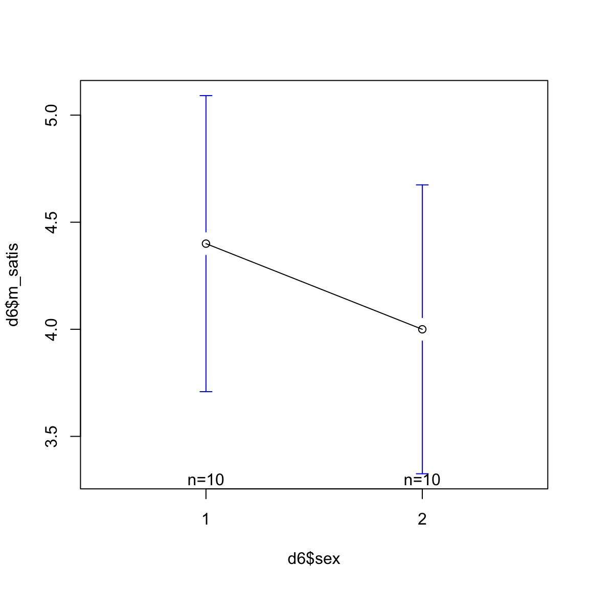
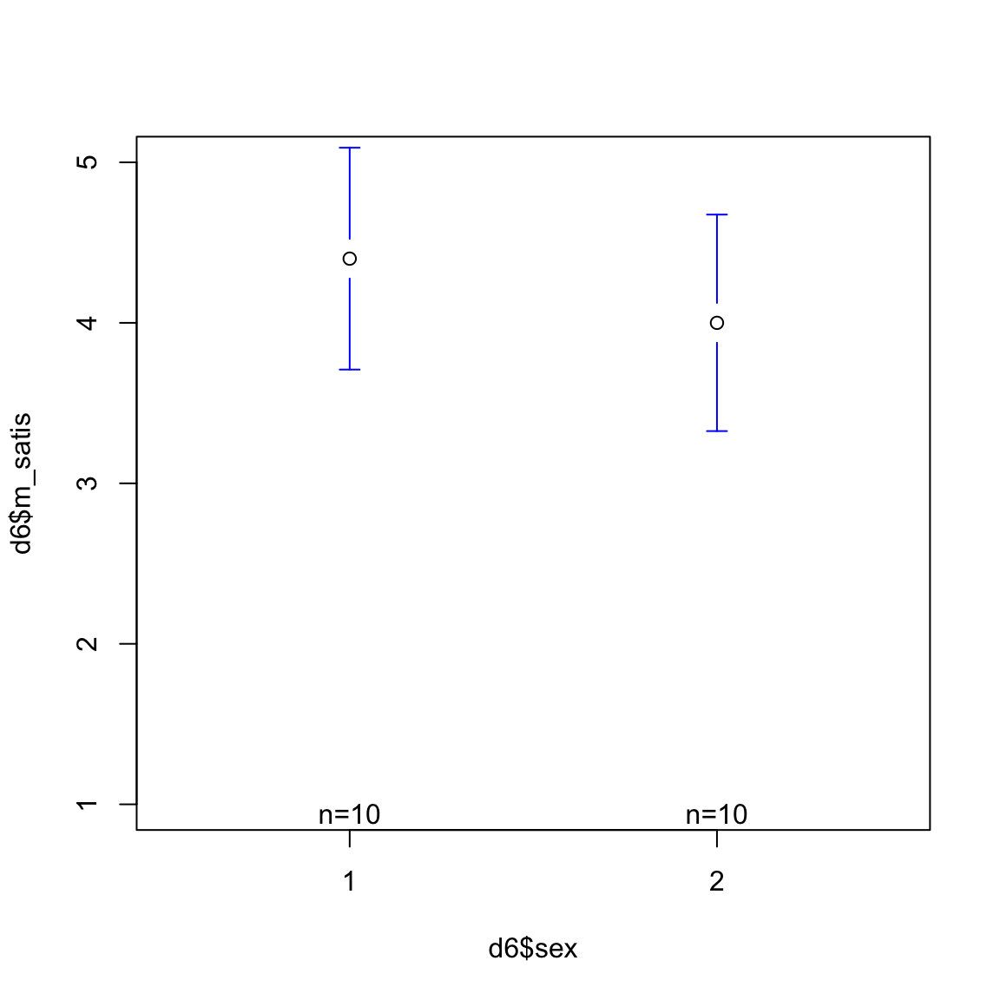
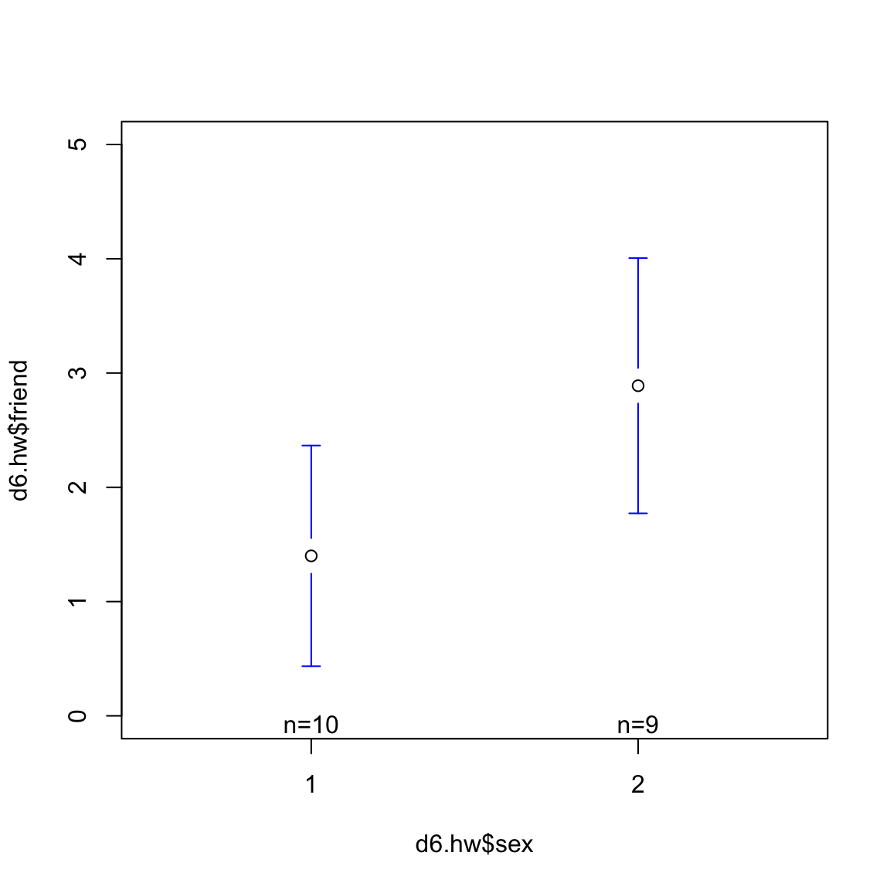

pacman::p_load(gplots, tidyverse)4日目：平均の差の検定
2つのグループの平均値に差があるかどうかを検定するために，t 検定を用います。 社会科学では，2グループに対応関係があるケースはほとんど無く，また2グループの分散も通常等しくありません。 そこで，対応関係にない分散の異なる2グループの平均差の検定を行う際に用いるウェルチのt検定(Welch’s t-test)について説明する。
検定は次のステップで行う。
- 2群の平均値に差は無いと仮定する(帰無仮説)。
- Welchのt値を計算し，帰無仮説を前提とした下でデータが出現する確率(p値)を計算する。
- p値が小さいと，帰無仮説の下でデータが得られることはあり得ない，と考える。
- ある有意水準のもとで帰無仮説を棄却(reject)する。
- 対立仮説を採択(accept)する。
2グループの平均値に差は無い，という帰無仮説を考える。 ウェルチのt値は次のように定義される。
t = \frac{\bar x_1 - \bar x_2}{\sqrt{\frac{s^2_1}{n_1} + \frac{s^2_2}{n_2}}}
平均の差を図示する。
平均の差を見るための作図パッケージgplotsを導入する。
gplotsをインストールするとエラーがでる場合があるようなので注意
ID，性別，結婚満足度尺度からなるデータセットを読み込む。
d6 <- read_csv("data/chap6.csv")Rows: 20 Columns: 3
── Column specification ────────────────────────────────────────────────────────
Delimiter: ","
dbl (3): ID, sex, m_satis
ℹ Use `spec()` to retrieve the full column specification for this data.
ℹ Specify the column types or set `show_col_types = FALSE` to quiet this message.まず，結婚満足度の男女差を図示する。
plotmeans(d6$m_satis ~ d6$sex)
このままだと縦軸の範囲が狭く，グラフが見づらいので，縦軸などを少し調整する。 plotmeans関数のオプションとして，ylimでY軸の範囲を，connectで平均をつなげる直線を引くかどうかを決める。
plotmeans(d6$m_satis ~ d6$sex, ylim=c(1,5), connect = F)
これより，平均にはあまり差が無いように見える。 次に等分散を仮定しないウェルチのt検定を行い，統計的に差を評価する。
Welch Two Sample t-test
data: d6$m_satis by d6$sex
t = 0.93704, df = 17.989, p-value = 0.3611
alternative hypothesis: true difference in means between group 1 and group 2 is not equal to 0
95 percent confidence interval:
-0.4968692 1.2968692
sample estimates:
mean in group 1 mean in group 2
4.4 4.0 分析の結果から，グループ1の平均は4.4，グループ2の平均は4.0であった。 t値は，0.94となり， このとき帰無仮説の下でこの差が出てくる確率は0.36となる。 よって帰無仮説の下でこの差がでてくることがあり得ないとはいえず，2群の平均値には差があるとはいえない。 したがって，結婚満足度の男性平均と女性平均に差があるかどうか分からない。
帰無仮説を棄却できなかったことから，「差が無い」ということを主張できないことに注意しよう。
問題6.1
悩みの相談相手の人数が性別により異なるのかを調べる。 まず，ID，性別，相談相手の人数についてのデータセットを読み込む。
d6.hw <- read_csv("data/chap6.hw.csv")Rows: 19 Columns: 3
── Column specification ────────────────────────────────────────────────────────
Delimiter: ","
dbl (3): ID, sex, friend
ℹ Use `spec()` to retrieve the full column specification for this data.
ℹ Specify the column types or set `show_col_types = FALSE` to quiet this message.まずはデータの特徴を掴むためにplotmeans()を用いて図示する。
plotmeans(d6.hw$friend ~ d6.hw$sex, ylim=c(0,5), connect = F)
今度は女子の相談相手人数の平均は男性のを大きく上回っていることが図より明らかである。 さらにウェルチの平均の差の検定を行い，統計的にこの差が有意なものなのかどうか，を検証する。
Welch Two Sample t-test
data: d6.hw$friend by d6.hw$sex
t = -2.3062, df = 16.439, p-value = 0.03443
alternative hypothesis: true difference in means between group 1 and group 2 is not equal to 0
95 percent confidence interval:
-2.8545203 -0.1232574
sample estimates:
mean in group 1 mean in group 2
1.400000 2.888889 t値は，-2.31となり， このとき帰無仮説の下でこの差が出てくる確率は0.03となる。 よって帰無仮説の下でこの差がでてくる確率は極めて低いことから，帰無仮説を棄却し，2群の平均値には差があるといえる。 したがって，悩みの相談相手の人数について，女性は男性よりも悩みを相談する相手が多い，といえる。
この文中にあるt値やp値も数字を入力するのではなく，R関数をインラインに埋め込んで表示させている。 r round(res$statistic,digits=2)でt値などを取り出せる。round()は数値を丸めるための関数です。
ウェルチのt値を手作業で計算
ウェルチのt値を計算すると，-2.31となる。 ウェルチのt検定で用いられる自由度は
v \sim \frac{\left ( \frac{s_1^2}{n_1} + \frac{s_2^2}{n_2} \right )^2 }{\frac{s_1^4}{n_1^2 (n_1 - 1)} + \frac{s_2^4}{n_2^2 ( n_2 -1)}}
で計算される。
v <- ((s1/n1) + (s2/n2) )^2 /#
#---------------------------------------------
( (s1^2 / (n1^2*(n1-1))) + ( s2^2 / (n2^2*(n2-1))) ) 自由度は，16.44となる。 t値が-2.31，自由度が16.44であるとき，t分布のもとで差が無いという結果が出る確率を表すp値は， 0.0341となり，有意水準5％のもとで帰無仮説が棄却される。
以上の計算を関数としてオブジェクトにしておく。
welch <- function(d1,d2){
n1 <- length(d1)
n2 <- length(d2)
m1 <- mean(d1)
m2 <- mean(d2)
s1 <- var(d1)
s2 <- var(d2)
w <- ( m1 - m2 ) / sqrt( (s1/n1) + (s2/n2) )
v <- ((s1/n1) + (s2/n2) )^2 / ( (s1^2 / (n1^2*(n1-1))) + ( s2^2 / (n2^2*(n2-1))) )
p <- dt(w,v)
if (p < 0.01) {
print("1％水準で有意!")
} else if (p < 0.05) {
print("5％水準で有意!")
} else if (p < 0.10) {
print("10％水準で有意!")
} else
print("なにもいえない。")
}先ほどの結果を再現してみる。
d1 <- d6.hw$friend[d6.hw$sex==1]
d2 <- d6.hw$friend[d6.hw$sex==2]
welch(d1,d2)[1] "5％水準で有意!"